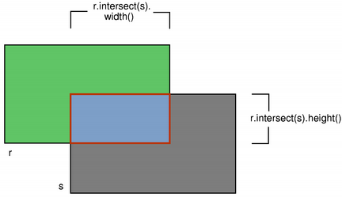

| Home · All Classes · Modules · QSS HELP · QSS 案例 · VER007 HOME |
该QRectF类定义使用浮点精度在平面的矩形。More...
这个类可以醃制。
该QRectF类定义使用浮点精度在平面的矩形。
一个矩形，通常表示为左上角和尺寸。一个QRectF的大小（宽度和高度）总是等于其形成的基础，它呈现的数学矩形。
甲QRectF可以用一组左，上，宽度和高度的整数，或者从一个被构造QPoint和QSize。下面的代码创建两个相同的矩形。
QRectF r1(100, 200, 11, 16); QRectF r2(QPoint(100, 200), QSize(11, 16));
还有一个第三个构造函数从创建QRectFQRect和一个相应toRect（ ）函数返回一个QRect在此基础上矩形的值的对象（注意，在返回的矩形的坐标被四舍五入到最接近的整数。）
该QRectF类提供了返回的各种矩形坐标函数的集合，使操纵这些。 QRectF还提供功能，以矩形相对移动到不同的坐标。此外，还有一个moveTo（ ）函数，移动矩形，留下它的左上角在给定的坐标。或者，所述translate（）函数使矩形给定的偏移量相对于当前位置，并且translated（ ）函数返回这个矩形的翻译件。
该size（ ）函数返回rectange的尺寸为QSize。的尺寸也可以单独使用检索到的width（）和height（）函数。操控方面使用setSize（ ）setWidth（）或setHeight（）函数。可替换地，大小可以通过应用或功能设定矩形的坐标，例如被改变，setBottom（）或setRight（ ） 。
该contains（ ）函数告诉一个给定的点是否是里面的矩形或没有了，intersects如果这个矩形相交与给定的矩形（ ）函数返回True （否则返回False ） 。该QRectF类还提供了intersected（）函数返回相交的矩形，并在united（ ）函数将返回一个封装给定的矩形，这个矩形：
|  |  |
| intersected() | united() |
该isEmpty如果该矩形的宽度或高度小于或等于，大于0 ， （）函数返回真。需要注意的是一个空矩形是无效的：在isValid如果宽度和高度大于0 （ ）函数返回True。一个空矩形（isNull（）== TRUE） ，另一方面，也将宽度和高度设置为0。
注意，由于该方法QRect和QRectF定义，一个空QRectF在本质上以同样的方式定义为QRect。
最后，相比QRectF对象可以被串流播放，以及。
当使用一个anti-aliased画家， QRectF的边界线将对称地在数学矩形的边界线的两侧呈现。但使用一个别名画家（默认值）时，其他规则。
然后，用一个像素宽的画笔绘制时QRectF的边界线将呈现给正确的和数学矩形的边界线下方。
当与两个像素宽画笔绘制边界线会由数学矩形被分割在中间。这将是这种情况时的笔被设置成偶数个像素，而与像素数为奇数的笔绘制，备用像素将呈现向右和数学矩形中的一个像素的情况下。
 |
 |
| Logical representation | One pixel wide pen |
 |
 |
| Two pixel wide pen | Three pixel wide pen |
该QRectF类提供了返回的各种矩形坐标函数的集合，使操纵这些。 QRectF还提供功能，以矩形相对移动到不同的坐标。
例如：bottom（ ）setBottom（）和moveBottom（ ）函数：bottom（）返回矩形的底边的y坐标，setBottom（）设置矩形的底边给定的y坐标（它可能会改变高度，但决不会改变矩形的顶边）和moveBottom（ ）移动整个矩形垂直，使矩形的底边在给定的y坐标和尺寸不变。

另外，也可以使用偏移量添加到该矩形的坐标adjust（）函数，以及检索使用基于原来的1调整一个新的矩形的adjusted（）函数。如果其中的宽度和高度为负时，用normalized（）函数来检索其中的角部被交换的矩形。
此外， QRectF提供getCoords（）函数，其提取的矩形的左上角和右下角的位置，并且getRect（ ）函数，它提取矩形的左上角，宽度和高度。使用setCoords（）和setRect（ ）函数来处理矩形的坐标和尺寸一气呵成。
构造一个空矩形。
See also isNull（ ） 。
构造一个矩形与给定topLeft角部和所述定size。
See also setTopLeft（）和setSize（ ） 。
构造一个矩形与给定topLeft和bottomRight角落。
此功能被引入Qt的4.3 。
See also setTopLeft（）和setBottomRight（ ） 。
构造一个矩形（x，y）作为它的左上角和给定的width和height。
See also setRect（ ） 。
构造一个QRectF从给定的矩形QRect rectangle。
See also toRect（ ） 。
添加dx1，dy1，dx2和dy2分别以矩形的现有的坐标。
See also adjusted（）和setRect（ ） 。
返回一个新的矩形dx1，dy1，dx2和dy2分别加入到这个矩形的现有坐标。
See also adjust（ ） 。
返回矩形的底边的y坐标。
See also setBottom（ ）bottomLeft（）和bottomRight（ ） 。
返回矩形的左下角的位置。
See also setBottomLeft（ ）bottom（）和left（ ） 。
返回矩形的右下角的位置。
See also setBottomRight（ ）bottom（）和right（ ） 。
返回矩形的中心点。
See also moveCenter（ ） 。
返回True如果给定的point是内部或矩形的边缘，否则返回False 。
See also intersects（ ） 。
这是一个重载函数。
返回True如果点（x，y）是内部或矩形的边缘，否则返回False 。
这是一个重载函数。
返回True如果给定的rectangle是这个矩形里面，否则返回False 。
提取矩形的左上角的位置*x1和*y1和右下角为*的位置x2和*y2。
See also setCoords（）和getRect（ ） 。
提取矩形的左上角的位置*x和*y，其尺寸*width和*height。
See also setRect（）和getCoords（ ） 。
返回该矩形的高度。
See also setHeight（ ）width（）和size（ ） 。
返回此矩形的交集和给定的rectangle。需要注意的是r.intersected(s)相当于r & s。
这个函数中引入了Qt 4.2中。
See also intersects（ ）united（）和operator&=（ ） 。
如果这个矩形相交与给定的，则返回Truerectangle（即它们之间有重叠的非空白区域） ，否则返回False 。
相交的矩形可使用检索到的intersected（）函数。
See also contains（ ） 。
返回True如果矩形为空，否则返回False 。
一个空矩形有width（）\u003c = 0或height（）\u003c = 0 。一个空矩形是无效的（即，参考isEmpty （ ） == ！isValid（））。
使用normalized（）函数来检索其中的角部被交换的矩形。
See also isNull（ ）isValid（）和normalized（ ） 。
返回True如果矩形为空矩形，否则返回False 。
空矩形具有的宽度和高度设置为0。一个空的矩形也是空的，因此无效。
See also isEmpty（）和isValid（ ） 。
返回True如果矩形是有效的，否则返回False 。
一个有效的矩形有一个width（）\u003e 0和height（）\u003e 0 。请注意，就像十字路口不平凡的操作没有定义无效矩形。一个有效的矩形不为空（即参考isValid （ ） == ！isEmpty（））。
See also isNull（ ）isEmpty（）和normalized（ ） 。
返回矩形的左边缘的x坐标。相当于x（ ） 。
See also setLeft（ ）topLeft（）和bottomLeft（ ） 。
移动矩形垂直，使矩形的底边在给定的y协调。矩形的尺寸是不变的。
See also bottom（ ）setBottom（）和moveTop（ ） 。
移动矩形，留下左下角在给定的position。矩形的尺寸是不变的。
See also setBottomLeft（ ）moveBottom（）和moveLeft（ ） 。
移动矩形，留下右下角的定position。矩形的尺寸是不变的。
See also setBottomRight（ ）moveBottom（）和moveRight（ ） 。
移动矩形，而使中心点在给定的position。矩形的尺寸是不变的。
See also center（ ） 。
水平移动矩形，使矩形的左边缘在给定的x协调。矩形的尺寸是不变的。
See also left（ ）setLeft（）和moveRight（ ） 。
水平移动矩形，使矩形的右边缘在给定的x协调。矩形的尺寸是不变的。
See also right（ ）setRight（）和moveLeft（ ） 。
移动矩形，留下左上角的指定位置（x，y） 。矩形的尺寸是不变的。
See also translate（）和moveTopLeft（ ） 。
这是一个重载函数。
移动矩形，留下左上角在给定的position。
移动矩形垂直，使矩形的顶线在给定的y协调。矩形的尺寸是不变的。
See also top（ ）setTop（）和moveBottom（ ） 。
移动矩形，留下左上角在给定的position。矩形的尺寸是不变的。
See also setTopLeft（ ）moveTop（）和moveLeft（ ） 。
移动矩形，留下右上角的定position。矩形的尺寸是不变的。
See also setTopRight（ ）moveTop（）和moveRight（ ） 。
返回一个归一化的矩形，即，具有一个非负的宽度和高度的矩形。
If width（）\u003c 0的函数交换的左右角部，并且交换的顶部和底部边角，如果height（）\u003c 0 。
See also isValid（）和isEmpty（ ） 。
返回矩形的右边缘的x坐标。
See also setRight（ ）topRight（）和bottomRight（ ） 。
设置的矩形的底部边缘与给定的y协调。可能会改变高度，但决不会改变矩形的上边缘。
See also bottom（）和moveBottom（ ） 。
设置矩形的左下角给定的position。可以改变大小，但决不会改变矩形的右上角。
See also bottomLeft（）和moveBottomLeft（ ） 。
设置矩形的右下角为给定的position。可以改变大小，但决不会改变矩形的左上角。
See also bottomRight（）和moveBottomRight（ ） 。
设置矩形的左上角的坐标为（x1，y1）和其右下角的坐标（x2，y2） 。
See also getCoords（）和setRect（ ） 。
设置了矩形的高度为给定的height。底部边缘被改变，但不顶一个。
See also height（）和setSize（ ） 。
设置了矩形的左边缘到给定的x协调。可能会改变宽度，但决不会改变矩形的右边缘。
相当于setX（ ） 。
设置矩形的左上角的坐标为（x，y） ，并且其大小为给定的width和height。
See also getRect（）和setCoords（ ） 。
设置了矩形的右边缘到给定的x协调。可能会改变宽度，但决不会改变矩形的左边缘。
See also right（）和moveRight（ ） 。
设置了矩形的大小给定的size。在左上角不移动。
See also size（ ）setWidth（）和setHeight（ ） 。
设置了矩形的顶边到给定的y协调。可能会改变高度，但决不会改变矩形的底边。
相当于setY（ ） 。
设置的矩形的左上角的给定position。可以改变大小，但决不会改变矩形的右下角。
See also topLeft（）和moveTopLeft（ ） 。
设置矩形的右上角，以给定的position。可以改变大小，但决不会改变矩形的左下角。
See also topRight（）和moveTopRight（ ） 。
设置了矩形的宽度与给定width。右边缘被改变，但不是左1 。
设置了矩形的左边缘到给定的x协调。可能会改变宽度，但决不会改变矩形的右边缘。
相当于setLeft（ ） 。
See also x（ ）setY（）和setTopLeft（ ） 。
设置了矩形的顶边到给定的y协调。可能会改变高度，但决不会改变矩形的底边。
相当于setTop（ ） 。
See also y（ ）setX（）和setTopLeft（ ） 。
返回矩形的大小。
See also setSize（ ）width（）和height（ ） 。
返回QRect基于这个矩形是可能的最小整数矩形完全包含此矩形的值。
此功能被引入Qt的4.3 。
See also toRect（ ） 。
返回矩形的上边缘的y坐标。相当于y（ ） 。
See also setTop（ ）topLeft（）和topRight（ ） 。
返回矩形的左上角的位置。
See also setTopLeft（ ）top（）和left（ ） 。
返回矩形的右上角的位置。
See also setTopRight（ ）top（）和right（ ） 。
返回QRect在此基础上矩形的值。请注意，在返回的矩形坐标四舍五入到最接近的整数。
See also QRectF（）和toAlignedRect（ ） 。
移动矩形dx沿x轴和dy沿着y轴，相对于当前位置。正值移动矩形向右，向下。
See also moveTopLeft（ ）moveTo（）和translated（ ） 。
这是一个重载函数。
移动矩形offset。x()沿x轴和offset。y()沿着y轴，相对于当前位置。
返回矩形的副本被翻译dx沿x轴和dy沿着y轴，相对于当前位置。正值移动矩形向右和向下。
See also translate（ ） 。
这是一个重载函数。
返回矩形的副本被翻译offset。x()沿x轴和offset。y()沿着y轴，相对于当前位置。
返回此矩形的边框和给定rectangle。
这个函数中引入了Qt 4.2中。
See also intersected（ ） 。
返回矩形的宽度。
See also setWidth（ ）height（）和size（ ） 。
返回矩形的左边缘的x坐标。相当于left（ ） 。
See also setX（ ）y（）和topLeft（ ） 。
返回矩形的上边缘的y坐标。相当于top（ ） 。
See also setY（ ）x（）和topLeft（ ） 。
| PyQt 4.10.3 for X11 | Copyright © Riverbank Computing Ltd and Nokia 2012 | Qt 4.8.5 |